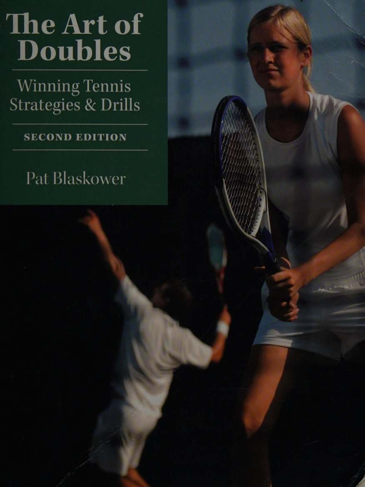
Tác phẩm cẩm nang chiến thuật và bài tập đánh đôi chuẩn mực của huấn luyện viên kỳ cựu Pat Blaskower
Lời Giới Thiệu: Bản Chất Đích Thực Của Quần Vợt Đánh Đôi
Introduction: The Essence and Reality of Championship Doubles Play
Nỗi Trăn Trở Của Các Cặp Đôi Trẻ Và Con Đường Đi Đến Đỉnh Cao
Rất nhiều vận động viên bước vào đánh đôi với suy nghĩ ngây thơ rằng chỉ cần hai tay vợt đánh đơn giỏi gộp lại là sẽ tạo nên một cặp đôi vô địch. Thực tế khắc nghiệt trên sân đấu luôn chứng minh điều ngược lại. Các tay vợt lão luyện với những cú đánh tưởng chừng rất bình thường nhưng sở hữu sự ăn ý hoàn hảo, hiểu rõ hình học sân bãi và lựa chọn cú đánh thông minh có thể dễ dàng giải quyết các ứng cử viên non nớt một cách chóng vánh. Các đội đôi trẻ tuổi và thiếu kinh nghiệm thường rơi vào trạng thái ức chế cực độ khi liên tục bại trận trước những đối thủ có kỹ thuật cơ bản thua kém mình. Sự chênh lệch giữa khát khao thành công và những thất bại cay đắng ban đầu chính là lý do khiến nhiều cặp đôi trẻ sớm vỡ mộng và từ bỏ. Là một huấn luyện viên kỳ cựu, tôi chứng kiến cảnh tượng này diễn ra hàng ngày: Những tay vợt đầy nhiệt huyết bước ra sân đấu rồi trở về với tâm trạng chán chường, hoàn toàn không hiểu vì sao mình lại thua cuộc. Mục tiêu cốt lõi của cuốn sách này là trang bị cho bạn hệ thống tư duy chiến thuật đỉnh cao, biến những nguyên lý vô hình thành các hành động chuẩn xác trên sân. Quần vợt đánh đôi không phải là cuộc đua sức mạnh cơ bắp đơn thuần. Đánh đôi là một bàn cờ thế đòi hỏi sự cân bằng tuyệt đối giữa hai cá thể, khả năng phân chia khu vực kiểm soát, và tinh thần đồng đội son sắt trong từng khoảnh khắc sinh tử.
Triết Lý Nền Tảng: Từ Bẫy Đánh Đơn Sang Tư Duy Đồng Đội
Sai lầm phổ biến nhất của người mới chơi đôi là tư duy đánh bóng cá nhân. Trong đánh đơn, bạn là chủ nhân duy nhất của khoảng sân và phải chịu trách nhiệm về mọi đường bóng. Trong đánh đôi, mỗi cú đánh bạn tung ra không chỉ nhắm vào đối phương mà còn trực tiếp định đoạt số phận của bạn cặp đứng cạnh. Nếu bạn đánh một quả bóng thiếu lực vào giữa sân, bạn đang dâng tặng cơ hội dứt điểm vào thẳng người đồng đội của mình. Đánh đôi xuất sắc đòi hỏi bạn phải học cách hy sinh những cú đánh phô diễn cá nhân để phục vụ cho cấu trúc tổng thể của đội. Bạn phải học cách hài lòng với việc đóng vai người kiến tạo kiên nhẫn, chờ đợi thời cơ cho người dứt điểm ra tay kết liễu điểm số. Khi bạn chuyển hóa được nhận thức từ góc nhìn cá nhân sang góc nhìn toàn cục của đội bóng, bạn đã bước chân vào ngưỡng cửa của nghệ thuật đánh đôi đỉnh cao.
Chương 1: Xây Dựng Và Nuôi Dưỡng Một Đội Đôi Cân Bằng
Chapter 1: Creating and Nurturing a Balanced Doubles Team
Đội Hình Trong Mơ: Bốn Phẩm Chất Cốt Lõi Của Bạn Cặp Hoàn Hảo
Tìm kiếm một người bạn cặp lý tưởng là hành trình tìm kiếm sự tương thích sâu sắc về cả kỹ năng lẫn tâm lý thi đấu. Huyền thoại John Bromwich và các bậc thầy đánh đôi thế giới đã đúc kết bốn phẩm chất quyết định giá trị của một người đồng đội trong mơ: Thứ nhất là khả năng Khả năng đoán trước (anticipation) vượt bậc. Điều phân định ranh giới giữa một tay vợt giỏi và một huyền thoại chính là trực giác nhạy bén trước từng đường bóng của đối phương. Khả năng dự đoán bao gồm việc đặt cú đánh của mình vào vị trí chiến lược để giới hạn góc trả bóng của đối thủ, đọc những chuyển động cơ thể sơ hở trước khi đối phương tiếp xúc bóng, và dịch chuyển nhịp nhàng cùng bạn cặp như hai bánh răng ăn khớp. Thứ hai là sự kiên định và tính kỷ luật sắt đá. Người bạn cặp hoàn hảo không cố gắng tìm kiếm điểm ace giao bóng ăn điểm trực tiếp một cách liều lĩnh, mà tập trung đưa quả giao bóng một vào sân với độ chính xác cao nhất. Trong các pha vô-lê, họ luôn ưu tiên bóng sâu xuống giữa sân đối phương thay vì mạo hiểm săn đuổi các đường biên dọc. Thứ ba là tính khí nâng đỡ và khả năng giao tiếp tích cực. Một người bạn cặp xuất sắc luôn biết cách khích lệ, tạo cảm giác an tâm và giữ vững sự tự tin cho đồng đội ngay cả trong những khoảnh khắc khủng hoảng nhất của trận đấu. Thứ tư là năng lực thích ứng và chuyển đổi linh hoạt. Họ có thể vừa hoàn thành xuất sắc vai trò phòng ngự lùi sâu khi bị dồn ép, vừa sẵn sàng lao lên áp sát lưới để trừng phạt bất kỳ sơ hở nào của đối thủ.
Phân Chia Nhiệm Vụ: Ai Đứng Sân Nào? (Deuce Court vs. Ad Court)
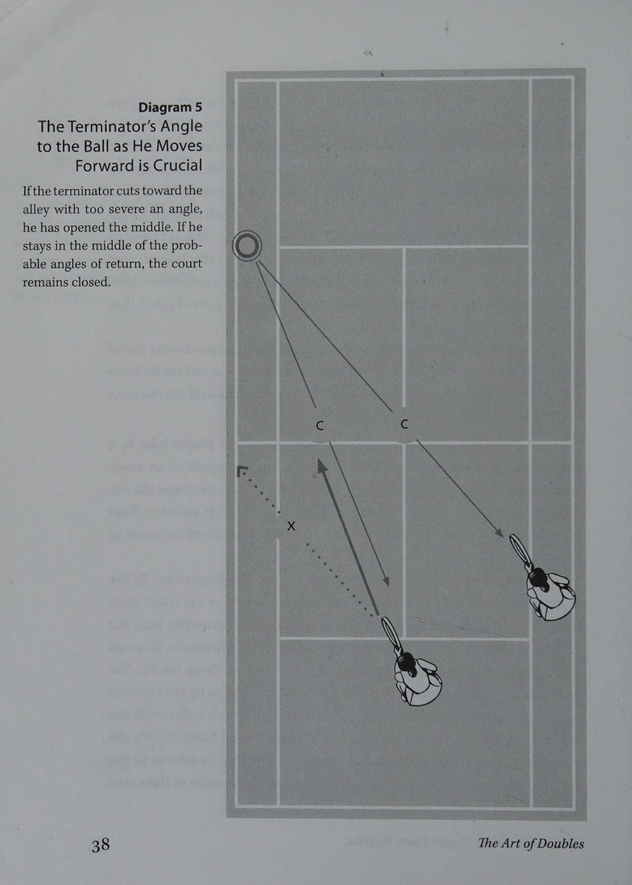
[English: Diagram 5: Two Strategic Paths to the Net for Receiver's Partner]
Việc lựa chọn ai đứng bên ô Deuce (sân phải) và ai đứng bên ô Ad (sân trái) là quyết định mang tính sống còn đối với cấu trúc chiến thuật của đội đôi: Ô sân Deuce thường được giao cho "Người kiến tạo" (The Setter). Đây là vị trí đòi hỏi sự ổn định phi thường, khả năng trả giao bóng chắc chắn và không bao giờ tự đánh hỏng. Người chơi ô Deuce chịu trách nhiệm mở đầu các game đấu một cách an toàn, tạo điều kiện thuận lợi nhất để người đứng lưới có thể bắt bài can thiệp. Ô sân Ad thường là địa bàn của "Người dứt điểm" (The Hitter / The Terminator). Hầu hết các điểm số bản lề mang tính quyết định game đấu (như 30-40, 40-30, Advantage hoặc Game Point) đều diễn ra từ bên ô sân này. Người chơi ô Ad cần có bản lĩnh thép, tâm lý vững vàng dưới áp lực nghẹt thở, và sở hữu cú overhead hoặc cú đè bóng uy lực để kết liễu các cơ hội ngàn vàng. Đối với các cặp đôi kết hợp giữa một tay vợt thuận tay phải và một tay vợt thuận tay trái, sự sắp xếp càng trở nên tinh tế hơn. Nếu tay vợt thuận tay trái đứng ô Ad để phát huy cú trả bóng chéo sân hiểm hóc, cả hai phải có quy ước rõ ràng về việc xử lý những quả lốp rơi vào giữa sân nhằm tránh va chạm vợt và tranh chấp không đáng có.
Bản Lĩnh Đồng Đội Và Nghệ Thuật Chia Tay Khi Không Phù Hợp
Trong thể thao thi đấu đỉnh cao, tâm lý của những người chiến thắng và những kẻ thất bại bộc lộ rất rõ ràng. Kẻ thất bại luôn có xu hướng tìm kiếm lý do bào chữa cho từng cú đánh hỏng, than thở về phong độ cá nhân và gieo rắc sự bi quan độc hại vào tâm trí bạn cặp. Việc gắn bó lâu dài với một người mang tâm lý tự ti thất bại sẽ hủy hoại hoàn toàn sự nghiệp đánh đôi của bạn. Nếu sau một thời gian thi đấu kiên nhẫn mà hai bên không tìm được tiếng nói chung về chiến thuật hoặc có sự xung đột trầm trọng về động lực, việc chia tay là điều tất yếu. Hãy thực hiện cuộc chia tay một cách văn minh, chuyên nghiệp và thẳng thắn ngoài sân đấu. Đừng bao giờ thể hiện sự thất vọng hay đổ lỗi cho nhau ngay trong lúc trận đấu đang diễn ra.
Chương 2: Duy Trì Kênh Giao Tiếp Thông Suốt Cùng Bạn Cặp
Chapter 2: Keep Your Team's Communication Lines Open
Giao Tiếp Bắt Đầu Từ Ngoài Sân Đấu Đến Từng Điểm Số Thực Chiến
Sự ăn ý của một cặp đôi không tự nhiên sinh ra trên sân mà bắt đầu từ những cuộc trò chuyện cởi mở trước trận đấu. Hai bạn cần thảo luận kỹ lưỡng về mục tiêu chung, điểm mạnh, điểm yếu của từng cá nhân và thống nhất kế hoạch tác chiến cụ thể đối với từng đối thủ. Khi bước vào trận đấu, khoảng thời gian 20 giây giữa các điểm số và 90 giây khi đổi sân chính là thời điểm vàng để kết nối. Hãy luôn chủ động tiến lại gần bạn cặp, chạm vợt, trao đổi ánh mắt và dành cho nhau những lời động viên chân thành. Những câu nói ngắn gọn như "Bóng tốt lắm", "Pha di chuyển rất hay", hoặc "Không sao cả, tập trung vào điểm tiếp theo" có sức mạnh giải tỏa áp lực tâm lý vô cùng to lớn.
Ngôn Ngữ Cơ Thể Tích Cực Và Cách Xử Lý Sai Lầm Giữa Trận
Ngôn ngữ cơ thể là thông điệp không lời mạnh mẽ nhất trên sân quần vợt. Khi bạn cúi gục đầu, buông thõng hai vai hoặc thở dài thất vọng sau một lỗi đánh hỏng của bạn cặp, bạn đang trực tiếp trao tặng sự hưng phấn cho đối thủ bên kia lưới và bóp nghẹt sự tự tin của đồng đội. Một quy tắc bất di bất dịch của các tay vợt đẳng cấp: Tuyệt đối không đưa ra bài học kỹ thuật hay chỉ trích cơ học động tác của bạn cặp trong lúc đang thi đấu. Đừng bao giờ nói "Bạn mở vợt muộn quá" hay "Cổ tay bạn bị lỏng rồi". Những lời nhận xét ấy chỉ làm cho đối tác bị tê liệt vì suy nghĩ quá nhiều. Thay vào đó, hãy tập trung vào phương hướng chiến thuật: "Cứ tiếp tục giao bóng vào quả trái của họ", hoặc "Lần này chúng ta sẽ cùng dâng lên áp sát lưới".
Chương 3: Làm Chủ Vị Trí Chuẩn Trên Sân Đôi
Chapter 3: Learn Proper Court Position
Vị Trí Tấn Công: Nguyên Lý Dây Căng Lưới Và Chiếc Gương Lồi
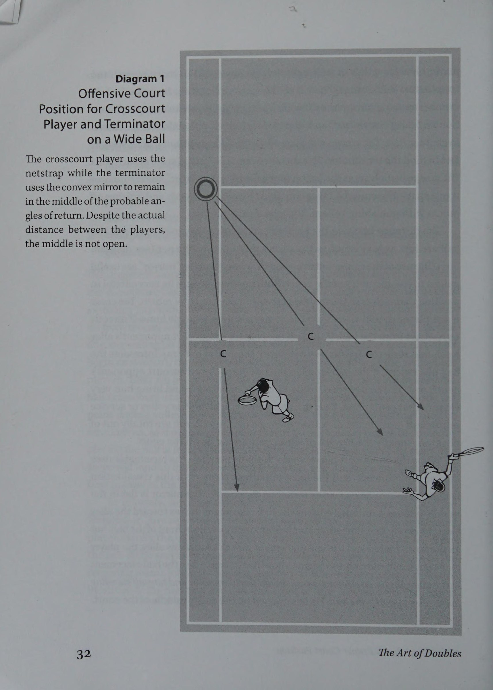
[English: Diagram 1: Proper Offensive Court Positioning in Doubles]
Chiến thắng trong đánh đôi được quyết định bởi việc làm chủ không gian hình học. Khi đội của bạn chiếm được thế chủ động ở khu vực lưới, hai người phải thiết lập một "Vị trí Tấn công" (Offensive Court Position) hoàn hảo. Hai vị trí đó bao gồm: Người đánh chéo sân (Crosscourt Player) và Người dứt điểm (The Terminator). Người đánh chéo sân có nhiệm vụ giữ cự ly khoảng 8 đến 10 bước chân phía sau người dứt điểm. Vị trí tham chiếu chuẩn mực của người đánh chéo sân là căn chỉnh thân mình thẳng hàng với dây căng giữa lưới (Netstrap). Trong khi đó, người dứt điểm di chuyển áp sát lưới hơn và định vị bản thân theo nguyên lý "Chiếc Gương Lồi" (Convex Mirror) để luôn đứng chính giữa góc phản xạ bóng xác suất cao nhất của đối phương. Khoảng cách so le giữa hai người đảm bảo rằng khu vực giữa sân hoàn toàn được khóa chặt. Rất nhiều tay vợt mắc sai lầm khi thấy hai đồng đội đứng cách xa nhau thì tưởng rằng khoảng giữa sân đang bị hở. Thực chất, theo quy luật góc đánh hình học, bóng đi vào giữa sân sẽ bị người dứt điểm đón đầu trừng phạt ngay tức khắc.
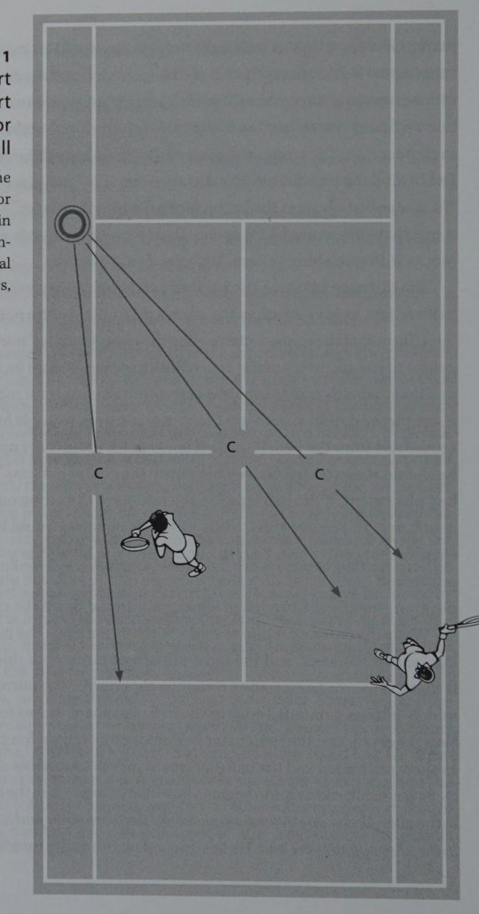
Sơ đồ 1: Vị trí Tấn công Chuẩn mực — Người đánh chéo sân sử dụng dây căng giữa lưới (Netstrap) làm mốc, trong khi Người dứt điểm (Terminator) dùng nguyên lý gương lồi bao quát góc phản xạ.
Vị Trí Phòng Thủ: Ứng Phó Với Quả Lốp Và Chuyển Trạng Thái
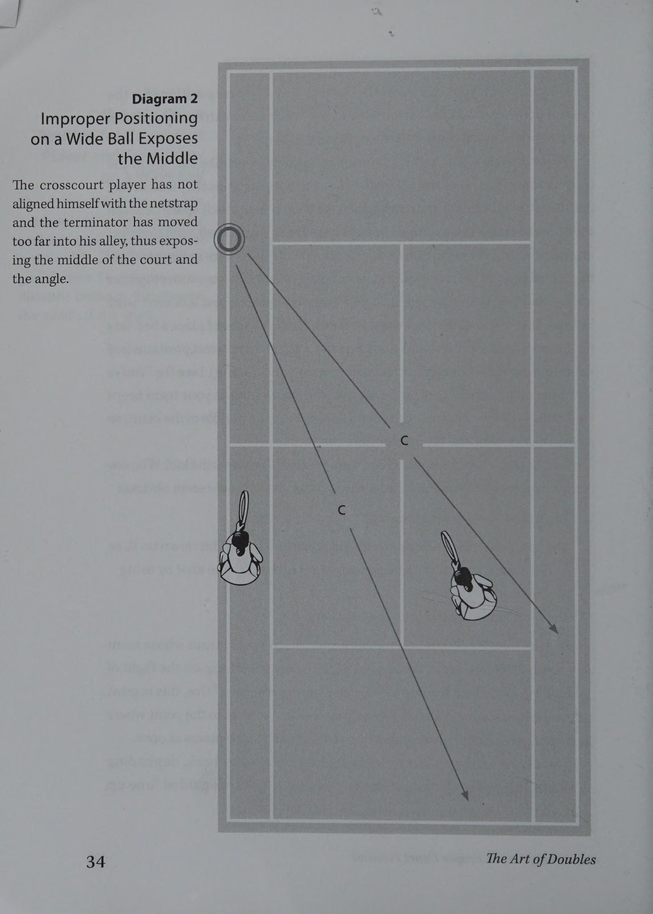
[English: Diagram 2: Defensive Court Positioning Under Pressure]
Khi đối phương tung ra một cú lốp bóng qua đầu vượt tầm với của bạn, đội đôi phải lập tức chuyển sang "Vị trí Phòng thủ" (Defensive Court Position). Đây là tình huống kiểm tra khả năng phối hợp nhịp nhàng và kỷ luật chiến thuật của toàn đội. Khi bạn cặp lùi về cuối sân để cứu một quả lốp bổng, người đứng lưới còn lại KHÔNG ĐƯỢC PHÉP đứng yên nhìn ngắm quả bóng. Người đó phải lùi ngay về khu vực vạch giao bóng chữ T, sẵn sàng phản xạ phòng ngự trước cú đập smash hoặc cú dứt điểm uy lực của đối thủ. Cả hai người phải di chuyển như thể được kết nối bởi một sợi dây vô hình: Khi một người lùi sâu để cứu bóng, người kia phải tự động điều chỉnh độ sâu để che chắn góc đánh nguy hiểm nhất.
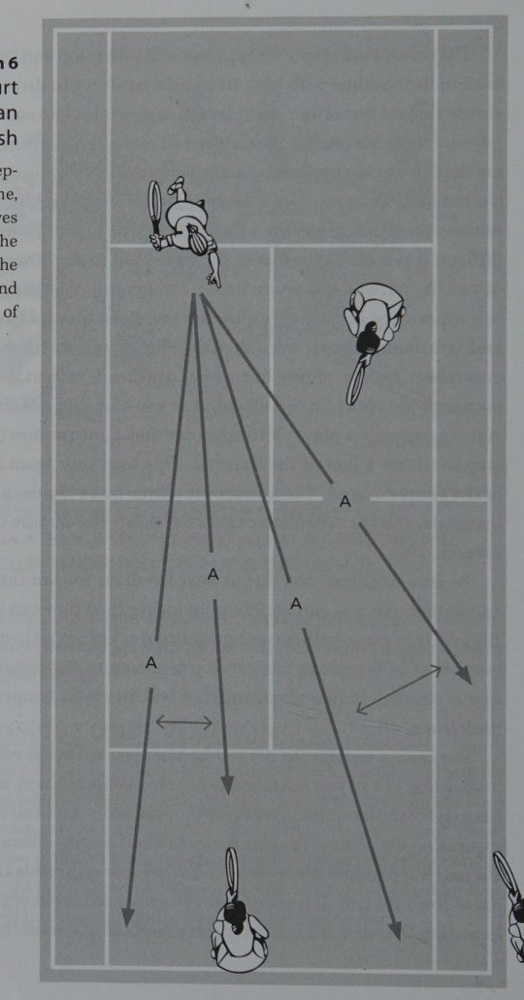
Sơ đồ 6: Vị trí Phòng thủ Đúng Cách — Khi một tay vợt lùi sâu giải cứu quả lốp, đồng đội lập tức hạ độ cao về khu vực vạch T để bảo toàn góc phòng ngự.
Chương 4: Chiến Thắng Bằng Lựa Chọn Cú Đánh Thông Minh
Chapter 4: Win With Intelligent Shot Selection
Quần Vợt Xác Suất Cao Và Quy Tắc Vàng "Sâu Về Sâu, Ngắn Về Ngắn"
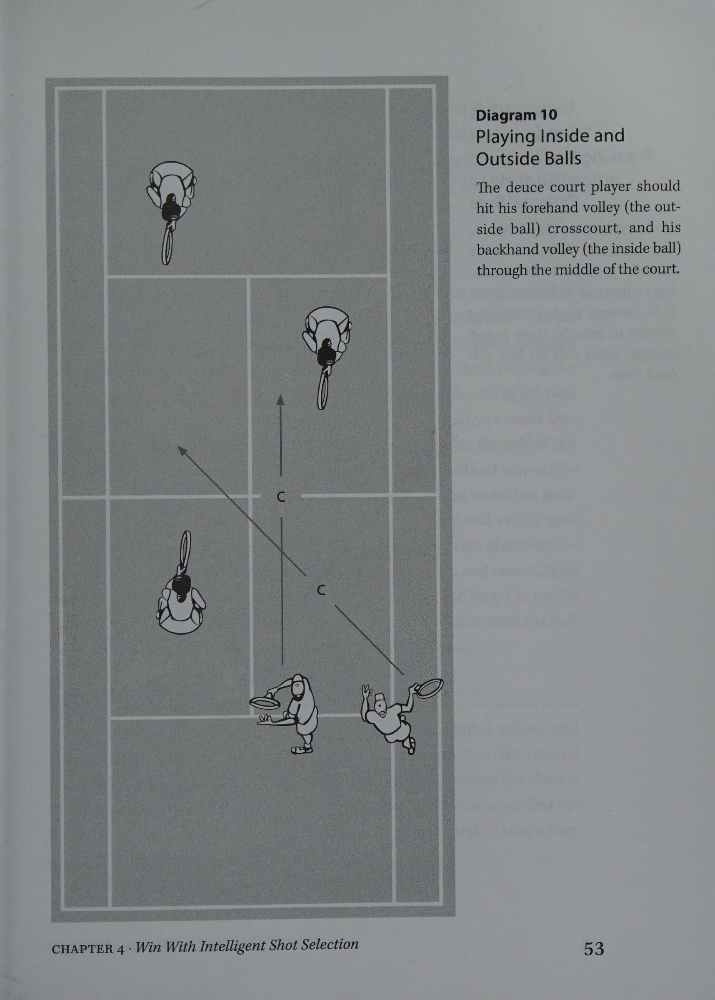
[English: Diagram 10: Percentage Targets: Aiming at Opponent's Shoes & Alleys]
Quần vợt đánh đôi đỉnh cao không dành cho những kẻ thích phô diễn kỹ xảo liều lĩnh. Đây là đấu trường của "Quần Vợt Xác Suất" (Percentage Tennis). Người chơi khôn ngoan luôn chọn những đường bóng có biên độ an toàn cao nhất qua lưới và tỷ lệ thành công cao nhất về mặt thống kê. Quy tắc nền tảng chi phối mọi quyết định trên sân là: "Sâu về sâu, ngắn về ngắn" (Deep to deep, short to short). Khi bạn đang ở sâu cuối sân và đối phương cũng đánh một quả bóng sâu, mục tiêu bắt buộc của bạn là phải trả bóng sâu ngược trở lại về phía đối thủ ở cuối sân. Tuyệt đối không cố gắng tung ra một cú bỏ nhỏ hay dứt điểm biên dọc mạo hiểm từ vị trí lùi sâu. Ngược lại, chỉ khi bóng rơi ngắn trong sân, bạn mới được phép dâng lên áp sát để thực hiện những pha dứt điểm hoặc ép cắm chân đối phương.
Ba Giai Đoạn Của Pha Bóng: Khởi Đầu, Giằng Co Và Dứt Điểm
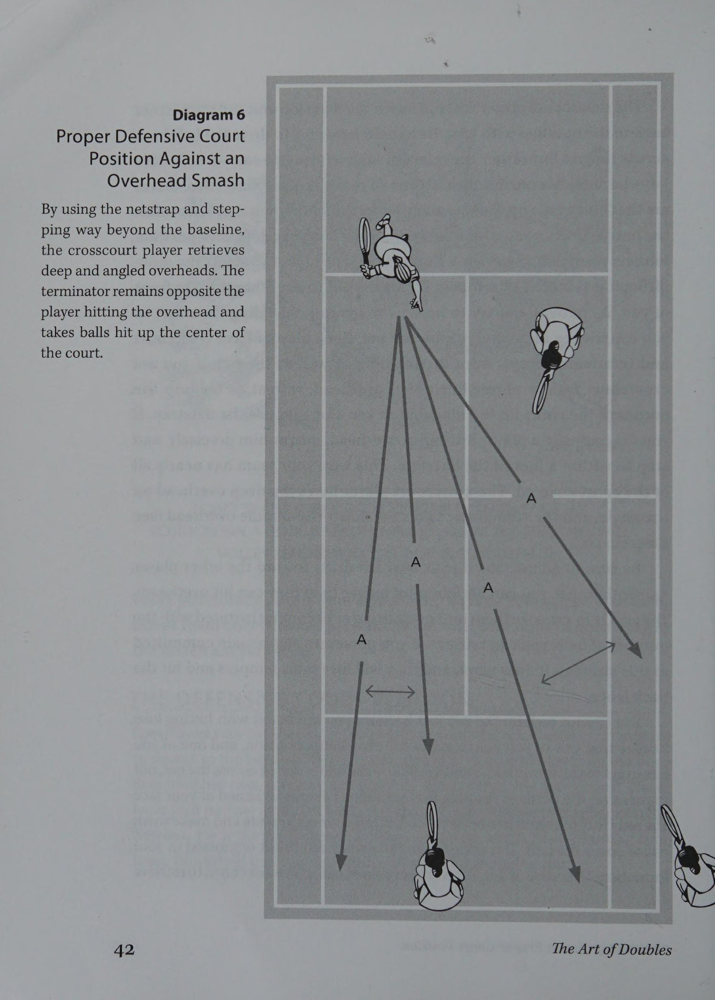
[English: Diagram 6: Closing the Net Geometry & Squeezing Opponent Angles]
Mỗi điểm số trong đánh đôi luôn vận hành qua ba giai đoạn chiến thuật rõ rệt: Giai đoạn Khởi đầu (The Beginning Stage): Bao gồm quả giao bóng và quả trả giao bóng. Mục tiêu tối thượng ở giai đoạn này là đưa bóng vào cuộc an toàn, vô hiệu hóa lợi thế ban đầu của đối thủ và thiết lập cấu trúc đội hình vững chắc. Người giao bóng phải ưu tiên tỷ lệ giao bóng một vào sân hơn là cố tìm cú ace tốc độ cao. Giai đoạn Giằng co (The Middle Stage): Các pha bóng giằng co chéo sân giữa hai tay vợt cơ sở, trong khi hai tay vợt đứng lưới tìm kiếm cơ hội can thiệp. Đây là giai đoạn đòi hỏi tính kiên nhẫn tuyệt đối. Đội nào vội vàng dứt điểm từ vị trí bất lợi sẽ tự dâng điểm cho đối phương. Giai đoạn Dứt điểm (The Terminating Stage): Thời khắc xuất hiện khi đối thủ mắc sai lầm đánh bóng non hoặc bóng bay bổng ngang tầm ngực ở khu vực lưới. Lúc này, "Người dứt điểm" phải dứt khoát tung ra cú đập smash hoặc cú volley cắm thẳng xuống chân đối thủ đứng gần nhất để kết thúc điểm số.
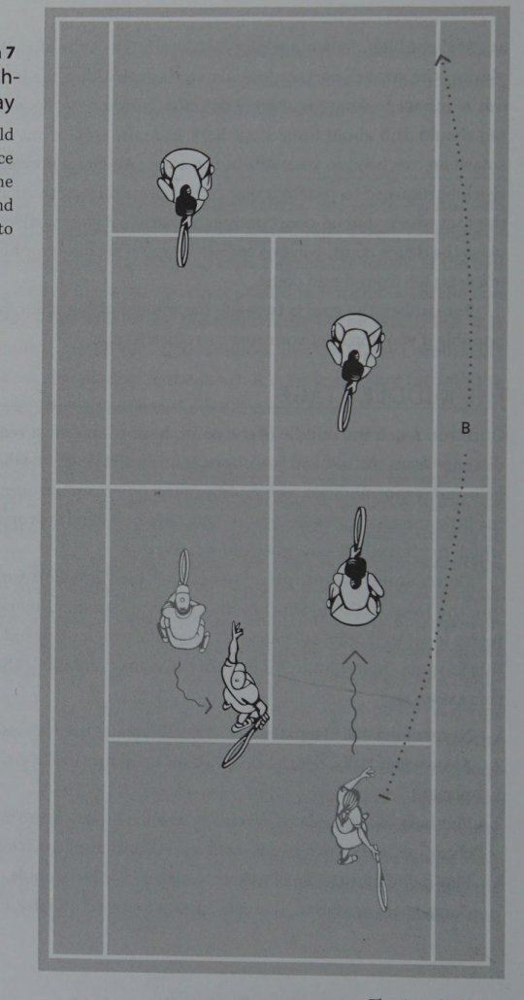
Sơ đồ 7: Quả Lốp Sâu Giải Tỏa Áp Lực — Khi bị dồn ép vào thế chân tường, một cú lốp bóng sâu qua đầu người đứng lưới chéo sân là giải pháp xác suất cao nhất để tái lập thế trận cân bằng.
Nghệ Thuật Thoát Khỏi Cú Đánh Bế Tắc (Knowing When to Bail Out)
Một tay vợt trưởng thành là người biết khi nào nên từ bỏ ý định tấn công để chuyển sang chế độ giải cứu. Nếu bạn chạy đến bóng trong tư thế mất thăng bằng, trọng tâm cơ thể ngả ra sau, việc cố gắng tung ra một cú đánh sấm sét là hành vi tự sát chiến thuật. Trong tình huống nguy cấp ấy, hãy can đảm "thoát cú đánh" (bail out) bằng cách tung ra một quả lốp phòng ngự thật cao và sâu về phía cuối sân đối phương. Quả lốp bổng mua thời gian quý giá giúp bạn và bạn cặp tái lập vị trí thăng bằng, biến một tình thế hiểm nghèo thành một cơ hội phản công sòng phẳng.
Chương 5: Phát Triển Kỹ Năng Bắt Lưới Poach Thượng Thừa
Chapter 5: Develop Superior Poaching Skills
Bản Chất Của Pha Poach: Cắt Chéo Mặt Lưới 45 Độ Thay Vì Chạy Ngang
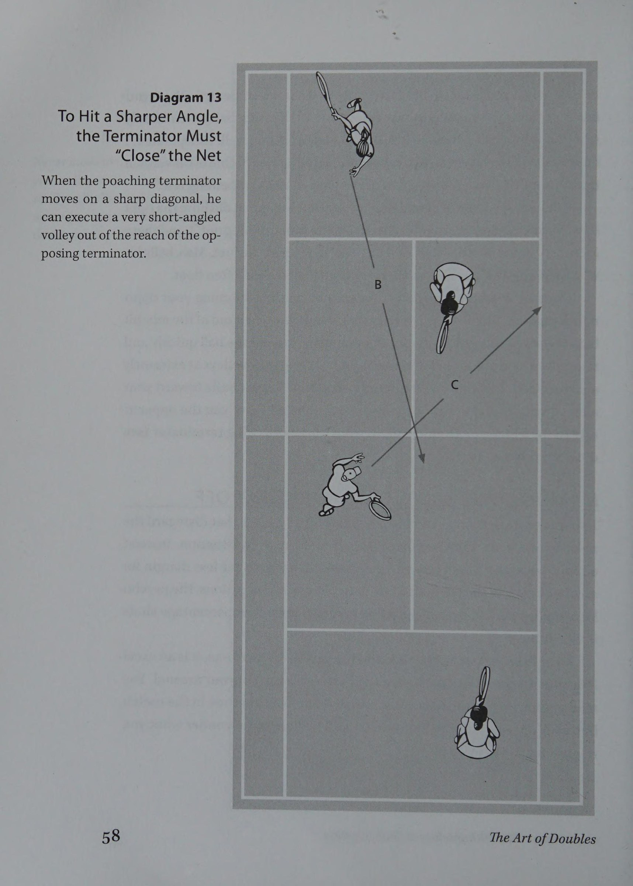
[English: Diagram 13: Diagonal Strike Path for Effective Poaching]
Kỹ năng bắt lưới (Poaching) là vũ khí sát thương khủng khiếp nhất của người đứng lưới trong đánh đôi. Tuy nhiên, phần lớn người chơi phong trào thất bại khi poach vì họ mắc sai lầm di chuyển: Họ chạy ngang song song với lưới. Khi bạn chạy ngang, bạn đang đón bóng ở vị trí thấp hơn mép lưới, khiến cú volley trở nên phòng thủ và dễ rúc lưới. Một pha poach chuẩn mực đòi hỏi bạn phải lao chéo lên phía trước một góc 45 độ hướng về phía cọc lưới đối diện. Di chuyển tiến lên giúp bạn đón bóng ở điểm cao nhất phía trên mép lưới, tận dụng toàn bộ động lượng cơ thể để đè bóng cắm xuống mặt sân.
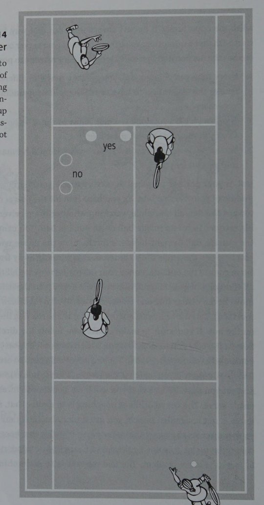
Sơ đồ 14: Nghệ Thuật Bắt Lưới (Poaching) — Người đứng lưới giữ vị trí kiên nhẫn, chỉ xuất phát khi đối phương đã hạ đầu vợt tiếp xúc bóng, lao chéo 45 độ để đón điểm tiếp xúc trên mép lưới.
Khi Nào Nên Hủy Bỏ Pha Poach Và Nghệ Thuật Ra Ám Hiệu
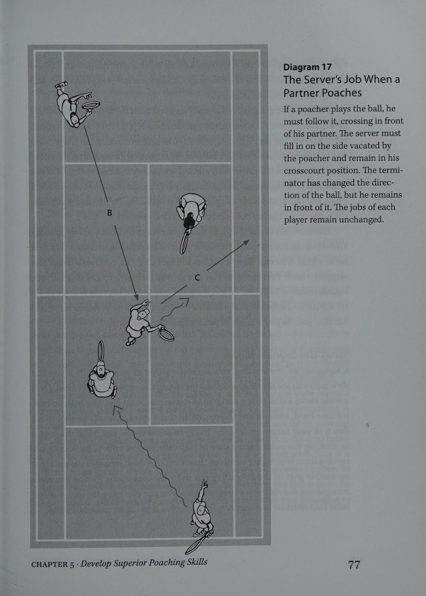
[English: Diagram 17: Recognizing When to Abort a Poach & Recover Court Balance]
Không phải mọi quả giao bóng đều thích hợp để poach. Bạn bắt buộc phải hủy bỏ kế hoạch bắt lưới nếu quả giao bóng của bạn cặp đi quá mềm, rơi nông giữa ô giao bóng, hoặc đối phương đã kịp vào thế chủ động để tung cú né người đánh bóng thuận tay dọc dây. Về vấn đề ám hiệu tay phía sau lưng: Ám hiệu là công cụ tuyệt vời để thống nhất chiến thuật, nhưng nó không bao giờ được trở thành gông cùm trói buộc người đứng lưới. Nếu bạn thấy bạn cặp giao một quả bóng quá hiểm hóc ngoài dự kiến khiến đối phương bị vặn sườn, hãy sẵn sàng tự do lao sang poach ngay lập tức dù trước đó chưa hề ra ám hiệu. Sự linh hoạt theo diễn biến bóng luôn đứng trên mọi quy ước định sẵn.
Chương 6: Duy Trì Quyền Kiểm Soát Khu Vực Lưới
Chapter 6: Keeping Control of the Net
Hóa Giải Quả Lốp Trả Giao Bóng Ác Mộng
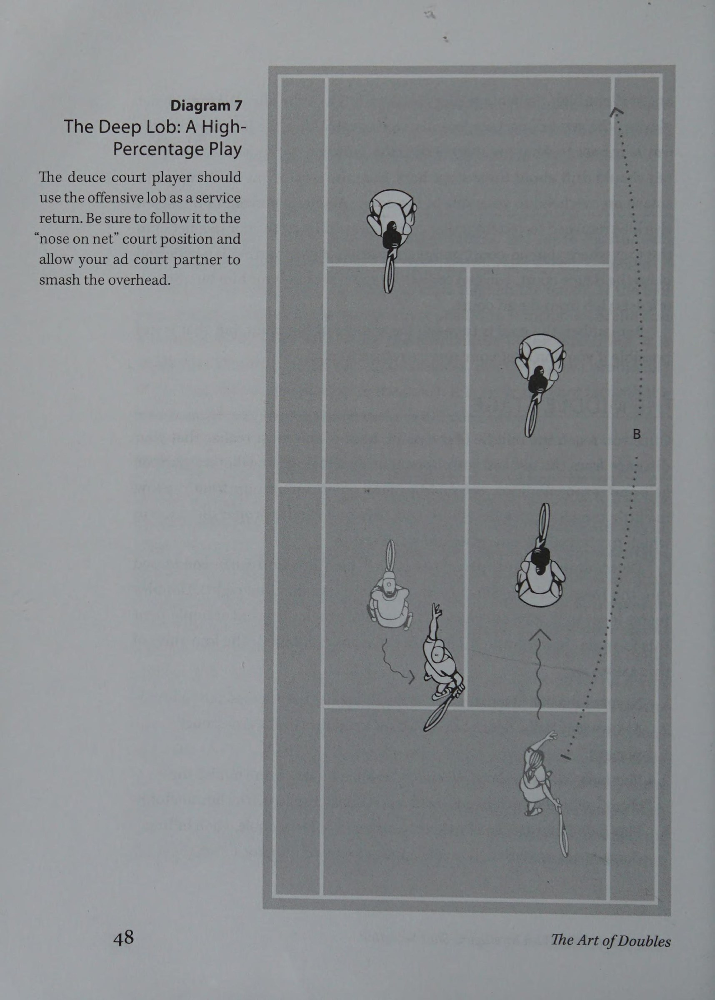
[English: Diagram 7: Tactical Service Return Lob Over Server's Partner]
Một trong những chiến thuật khó chịu nhất mà các đội đôi đối thủ thường sử dụng là quả lốp trả giao bóng (Service Return Lob). Cú đánh này vô hiệu hóa ngay lập tức người đứng lưới hiếu chiến và buộc người giao bóng phải quay đầu đuổi bóng trong thế bị động. Để hóa giải chiến thuật này, người đứng lưới không được phép đứng quá sát lưới khi bạn cặp chuẩn bị giao bóng. Hãy giữ khoảng cách hợp lý cách lưới khoảng hai cây vợt, luôn nhón gót và sẵn sàng cho một bước lùi bật nhảy (drop-step). Nếu quả lốp nằm trong tầm khống chế, hãy kiên quyết tung cú bật cao đập smash hoặc volley đè bóng ngay trên không trung để dập tắt ý đồ phòng ngự của đối phương.
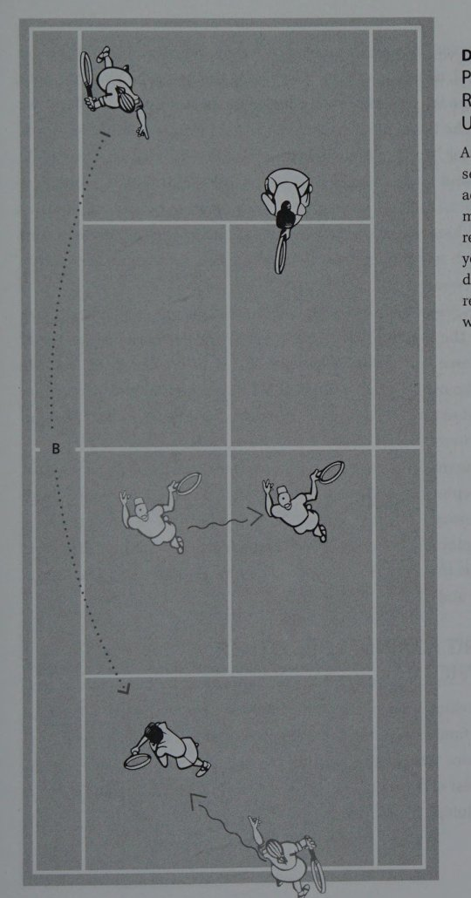
Sơ đồ 19: Phòng Thủ Quả Lốp Hiệu Quả — Khi bóng qua đầu người đứng lưới, người giao bóng lùi chéo sân bọc lót, trong khi người đứng lưới nhanh chóng di chuyển sang ô đối diện để hoàn tất hoán đổi sân.
Nguyên Tắc Hoán Đổi Vị Trí Khi Bị Qua Đầu
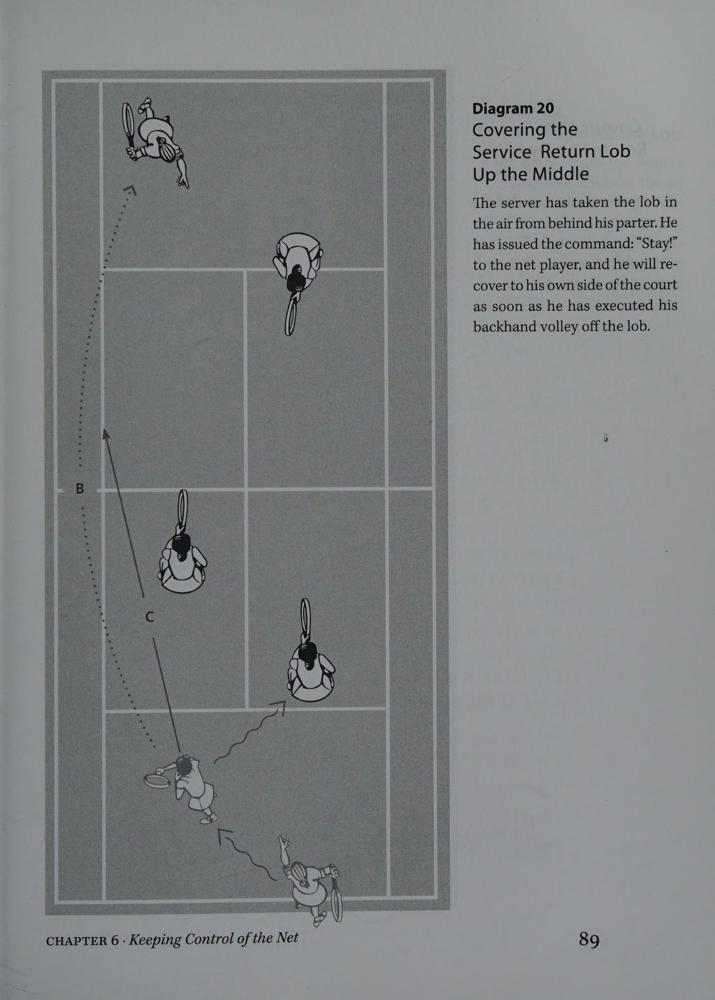
[English: Diagram 20: Communication & Switching Sides on Deep Lobs]
Khi một quả lốp hoàn hảo vượt qua tầm với của người đứng lưới, quy tắc sinh tồn đầu tiên là: Người đứng lưới KHÔNG ĐƯỢC CHẠY LÙI THẲNG VỀ PHÍA SAU. Việc chạy giật lùi vừa nguy hiểm cho bản thân vừa khiến bạn mất hoàn toàn tầm nhìn trận đấu. Trong tình huống này, đồng đội từ phía sau sẽ hô vang "Chuyển!" (Switch!) và di chuyển chéo sang để cứu quả bóng. Người đứng lưới phía trước lập tức di chuyển ngang sang phần sân trống phía đối diện, giữ vững khu vực lưới ở phần sân mới. Sự hoán đổi mượt mà này giúp đội đôi duy trì được một người phía sau và một người phía trước, ngăn không cho đối thủ tràn lên áp đảo cả hai vị trí.
Chương 7: Thấu Hiểu Nhiệm Vụ Của Bạn Trên Sân
Chapter 7: Understanding Your Jobs on the Court
Tư Duy Chuyên Nghiệp: Coi Bản Thân Đang Thực Hiện Nhiệm Vụ
Khi bước vào sân đấu đôi, bạn không thể thi đấu theo cảm hứng bộc phát. Mỗi tay vợt phải tự xem mình như một nhân sự đang đảm nhận một bản mô tả công việc cụ thể. Nếu một trong bốn vị trí trên sân sao nhãng bổn phận của mình, toàn bộ hệ thống phòng thủ và tấn công của đội sẽ lập tức sụp đổ. Sự kỷ luật bắt đầu từ việc thấu suốt vai trò trong từng pha bóng: Bạn đang là người phát động tấn công, người che chắn biên dọc, người trả giao bóng sinh tồn hay người quan sát bọc lót? Nhận thức rõ ràng về chức trách giúp loại bỏ hoàn toàn sự do dự, tạo nên những phản xạ dứt khoát và chuẩn xác trong từng tích tắc.
Bốn Vị Trí Trách Nhiệm Trên Sân Đôi
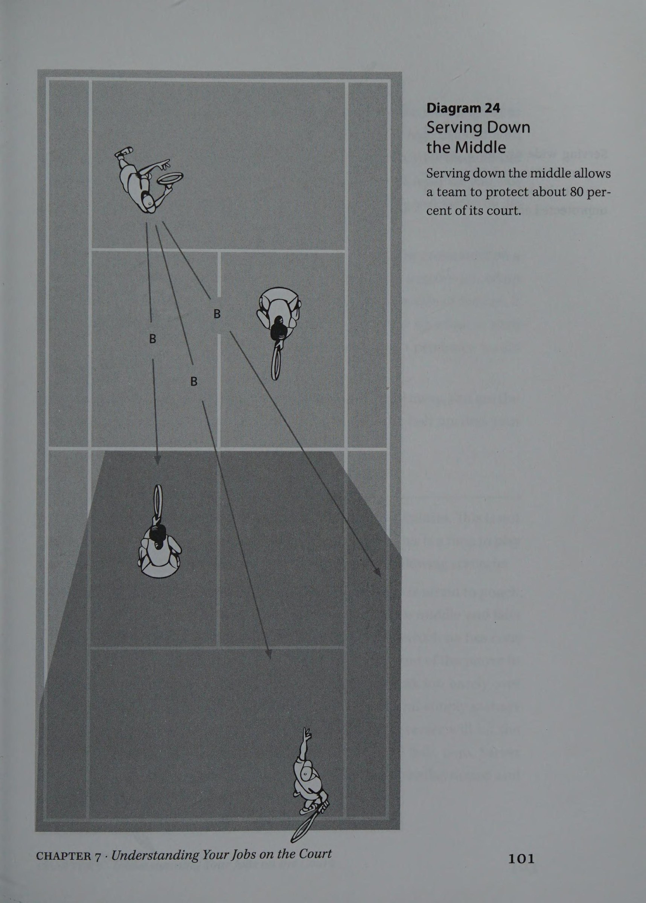
[English: Diagram 24: Four Jobs on the Court: Server, Receiver & Partners]
Bốn vai trò luân phiên trên sân bao gồm: Người Giao Bóng (The Server): Nhiệm vụ hàng đầu là đưa quả giao bóng một vào sân với độ xoáy và vị trí đã thỏa thuận, không tự tạo áp lực bằng các lỗi giao bóng hỏng. Sau cú giao, người giao bóng phải nhanh chóng chiếm lĩnh vị trí chuẩn để xử lý cú đánh trả của đối phương. Bạn Cặp Người Giao Bóng (The Server's Partner): Là lá chắn thép bảo vệ khu vực lưới. Người này có nhiệm vụ quan sát người trả giao bóng, tạo áp lực tâm lý bằng những bước nhử bóng và kiên quyết bảo vệ hành lang biên dọc nếu quả giao bóng không đủ hiểm hóc. Người Trả Giao Bóng (The Receiver): Mục tiêu sống còn là đưa bóng qua lưới an toàn về phía chéo sân, hướng bóng cắm sâu xuống chân người giao bóng đang dâng lên. Người trả bóng không được phép nhắm bóng thẳng vào người đứng lưới đối phương trừ khi có cơ hội phản công rõ rệt. Bạn Cặp Người Trả Giao Bóng (The Receiver's Partner): Đứng ở khu vực vạch giao bóng, theo dõi sát sao điểm rơi của quả giao bóng để phát tín hiệu "Vào" hay "Ngoài", đồng thời sẵn sàng dâng lên lưới hoặc lùi lại đáy sân tùy thuộc vào chất lượng cú trả bóng của đồng đội.
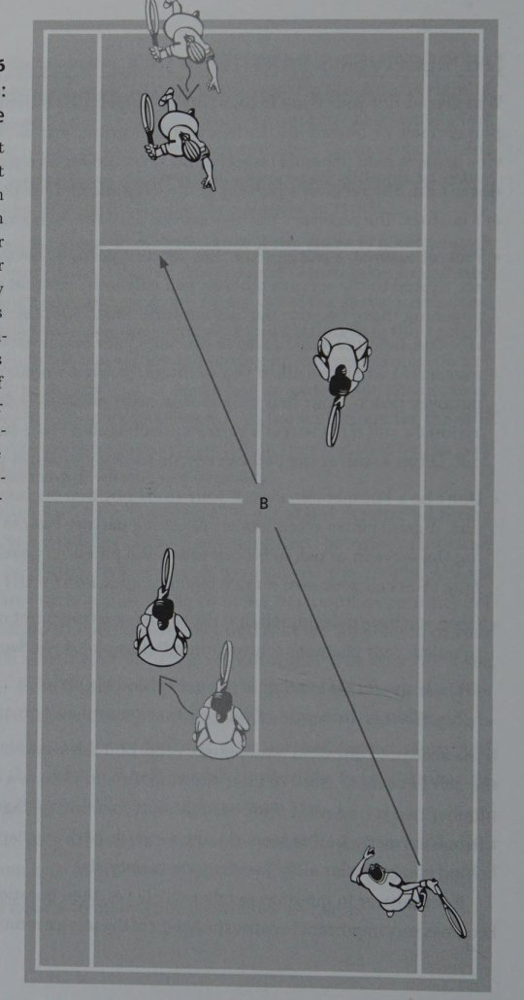
Sơ đồ 26: Kỷ Luật Của Người Đứng Lưới — Khi quả giao bóng đi nông hoặc lệch tâm điểm, người đứng lưới phải giữ nguyên vị trí phong tỏa biên dọc, tuyệt đối không di chuyển liều lĩnh sang giữa sân.
Chương 8: Tính Linh Hoạt: Vũ Khí Chiến Thuật Hùng Mạnh
Chapter 8: Flexibility: A Powerful Weapon
Sự Tự Tin Tạo Nên Tính Linh Hoạt Chiến Thuật
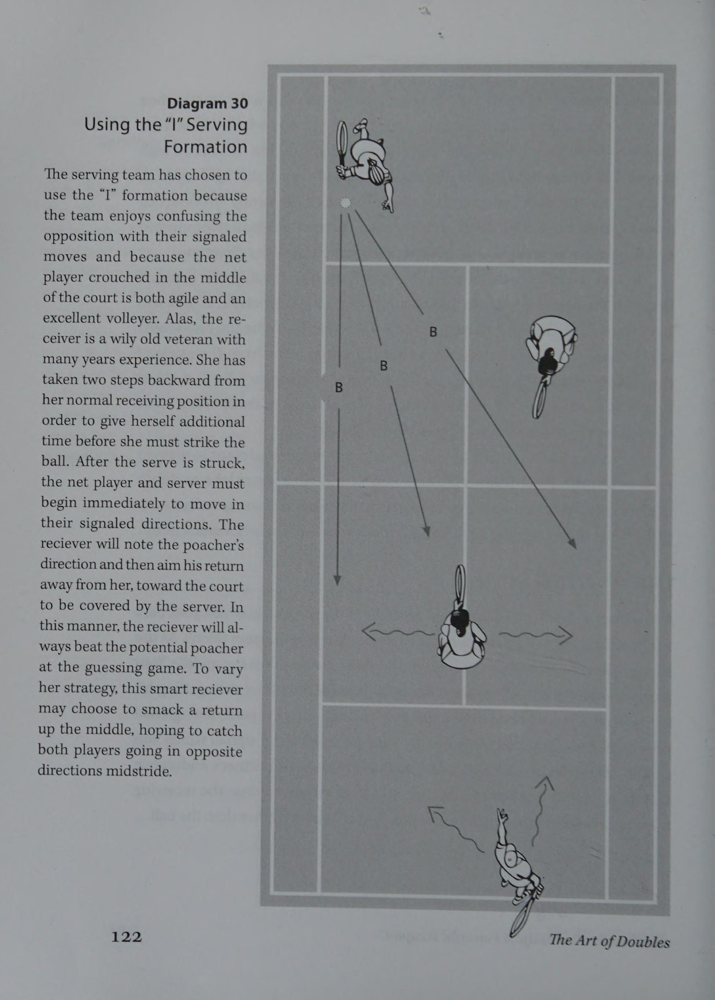
[English: Diagram 30: The "I" Formation Center Straddle & Confusion Tactics]
Sự bảo thủ và cứng nhắc là căn bệnh trầm kha của những cặp đôi tầm thường. Khi kế hoạch tác chiến ban đầu bị đối phương bắt bài hoặc bạn gặp phải một ngày thi đấu dưới sức, sự linh hoạt chính là chiếc phao cứu sinh duy nhất có thể xoay chuyển cục diện trận đấu. Tính linh hoạt đòi hỏi sự tự tin to lớn vào năng lực bản thân và niềm tin tuyệt đối nơi bạn cặp. Thay vì bực bội vì đối phương liên tục cứu được những quả dứt điểm ngon ăn, một đội đôi đẳng cấp sẽ bình tĩnh thay đổi quỹ đạo bóng, hạ thấp nhịp độ hoặc thay đổi trận địa đứng sân để làm rối loạn sự tính toán của đối thủ.
Trận Địa Úc (Australian Formation) Và Đội Hình Chữ I (I-Formation)
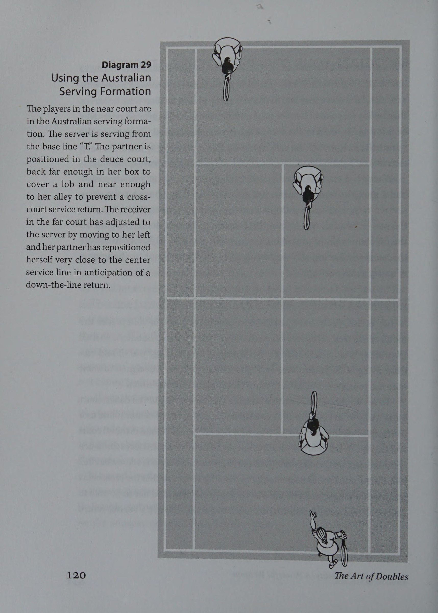
[English: Diagram 29: Australian Formation Setup & Crosscourt Denial]
Để phá vỡ nhịp điệu trả giao bóng của đối phương, các cặp đôi nhà nghề thường sử dụng hai trận địa biến ảo đặc biệt: Trận Địa Úc (The Australian Formation): Người đứng lưới di chuyển sang đứng cùng một bên sân với người giao bóng, ngay trước mặt đối thủ trả bóng. Trận địa này triệt tiêu hoàn toàn góc đánh trả chéo sân sở trường của đối phương, ép họ phải trả bóng dọc dây vào khoảng trống đã được người giao bóng đón lõng sẵn. Đội Hình Chữ I (The I-Formation): Người đứng lưới ngồi thụp xuống ngay trên vạch chữ T ở giữa sân, lưng thẳng hàng với người giao bóng phía sau. Cấu trúc này tạo thành một chữ I hoàn hảo, che giấu hoàn toàn hướng di chuyển tiếp theo của người đứng lưới. Khi bóng vừa rời vợt giao bóng, người đứng lưới sẽ bật dậy lao sang trái hoặc sang phải theo ám hiệu đã quy ước, đẩy đối thủ trả giao bóng vào thế hoang mang tột độ.
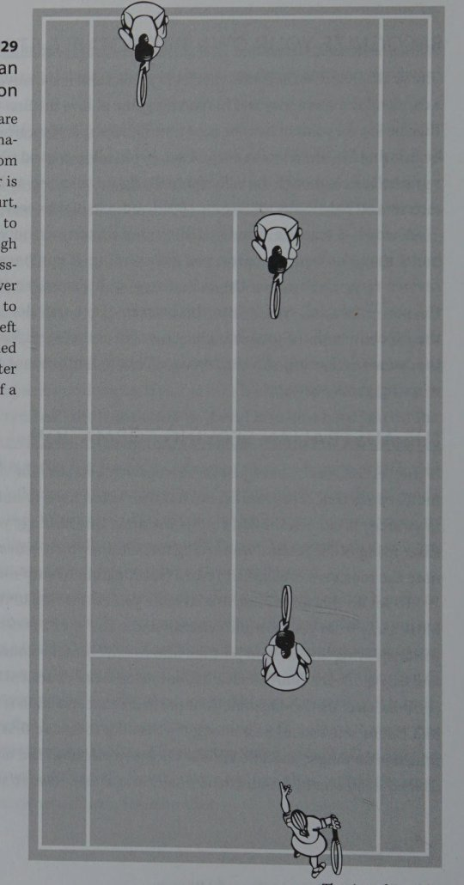
Sơ đồ 29: Trận Địa Úc (Australian Formation) — Người đứng lưới đứng cùng bên với người giao bóng, vô hiệu hóa hoàn toàn cú trả bóng chéo sân hiểm hóc của đối phương.
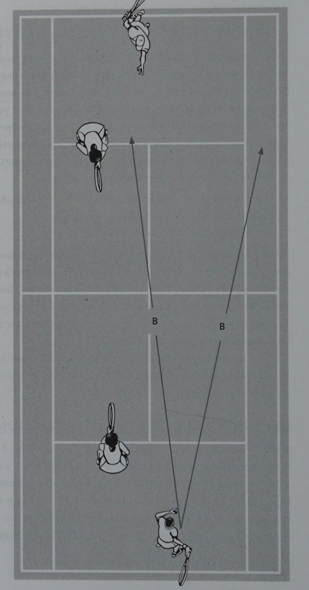
Sơ đồ 31: Đội Hình Chữ I (I-Formation) — Người đứng lưới ngồi xổm trên vạch trung tâm, tạo sự bất ngờ tuyệt đối về hướng di chuyển can thiệp sau quả giao bóng.
Chương 9: Làm Chủ Các Yếu Tố Vô Hình Trong Đánh Đôi
Chapter 9: Gaining Command of the Intangibles
Quản Lý Thời Gian, Độ Sâu, Tốc Độ Và Cảm Giác Tinh Tế
Trong mắt người xem bình thường, quần vợt chỉ là cuộc đọ sức của tốc độ và lực đánh. Nhưng với các chuyên gia đánh đôi, các yếu tố vô hình (The Intangibles) mới là chìa khóa mở ra cánh cửa chiến thắng. Yếu tố đầu tiên chính là "Thời Gian". Trên sân lưới, bạn chỉ có vài phần mười giây để xử lý tình huống. Khả năng tước đoạt thời gian của đối thủ và tạo thêm thời gian cho bạn cặp là cảnh giới cao nhất của chiến thuật. Biết khi nào nên dùng tốc độ bùng nổ, khi nào nên đánh sâu giảm nhịp và khi nào nên sử dụng cảm giác tinh tế (Finesse) là biểu hiện của một tay vợt bậc thầy. Một cú volley cắt bóng xoáy chìm (Underspin Drop Volley) nhẹ nhàng gài bóng rơi sát lưới thường mang lại hiệu quả hủy diệt cao hơn rất nhiều so với một cú đập bóng hết lực vào đúng tầm với của đối phương.
Nghệ Thuật Dự Đoán Và Hai Quy Tắc Di Chuyển Vàng
Dự đoán (Anticipation) không phải là hành động đoán mò may rủi. Dự đoán là kết quả của việc quan sát chuyển động của đối thủ: Hướng chân trụ, độ mở của mặt vợt và điểm tiếp xúc bóng. Khi bạn đọc được các tín hiệu cơ thể này, bạn sẽ di chuyển trước một bước mà không bao giờ rơi vào cảnh hối hả, chới với đuổi bóng. Hai Quy Tắc Di Chuyển Vàng trên sân đôi: Quy tắc một: Luôn di chuyển khi đối thủ bắt đầu vung vợt, không đợi đến khi bóng rời mặt vợt mới bắt đầu chạy. Quy tắc hai: Giữ trọng tâm cơ thể luôn hướng về phía trước, sẵn sàng cho bước split-step thăng bằng tại thời điểm đối phương tiếp xúc bóng.
Chương 10: Rèn Luyện Bản Lĩnh Tinh Thần Thép
Chapter 10: Achieving Mental Toughness
Nỗi Ám Ảnh Bị Cóng Và Nghệ Thuật Chinh Phục Nỗi Sợ Chiến Thắng
"Cóng" (Choking) là hiện tượng tâm lý phổ biến khi cơ bắp bị co cứng, hơi thở dồn dập và tâm trí bị bao phủ bởi nỗi sợ hãi ở những thời khắc quyết định. Tuy nhiên, ít người nhận ra rằng, bên cạnh nỗi sợ thất bại, nhiều tay vợt thực chất lại mang trong mình "Nỗi sợ chiến thắng" (Fear of Winning). Họ sợ trách nhiệm đi kèm với vị thế kẻ chiến thắng, sợ cảm giác tội lỗi khi đánh bại đối thủ thân quen, hoặc hoảng sợ trước viễn cảnh trận đấu sắp kết thúc. Để vượt qua trạng thái cóng, bạn phải tập trung toàn bộ tâm trí vào quá trình thực thi thay vì nghĩ về tỷ số chung cuộc. Hãy xây dựng một nghi thức chuẩn bị cố định giữa các điểm số: Đập bóng ba nhịp, hít thở sâu, hướng ánh mắt về dây vợt và tự nhủ một thông điệp hành động tích cực ngắn gọn.
Trạng Thái Dòng Chảy (The Zone): Đỉnh Cao Của Sự Tập Trung
Khi một cặp đôi bước vào "Trạng Thái Dòng Chảy" (The Zone), mọi thứ dường như chuyển động chậm lại. Mọi cú đánh đều trở nên tự nhiên, chính xác và không đòi hỏi sự nỗ lực gượng gạo. Bạn không còn nghe thấy tiếng ồn ào của khán giả xung quanh mà chỉ cảm nhận được âm thanh thanh thoát của trái bóng chạm tâm vợt. Trạng thái tuyệt đỉnh này chỉ xuất hiện khi bạn buông bỏ hoàn toàn sự phán xét bản thân. Đừng dằn vặt vì một lỗi đánh hỏng vừa qua. Hãy coi mỗi điểm số như một khởi đầu hoàn toàn mới và thưởng thức trọn vẹn từng khoảnh khắc tranh tài trên sân.
Chương 11: Nói Về Chiến Thắng Và Thất Bại
Chapter 11: Let's Talk About Winning and Losing
Mười Nguyên Nhân Phổ Biến Nhất Khiến Đội Đôi Bại Trận
Kinh nghiệm huấn luyện qua hàng thập kỷ cho thấy các cặp đôi thường thua trận vì mười sai lầm kinh điển sau: Thứ nhất: Áp sát lưới nhưng lại đánh bóng chéo sân. Đây là lỗi chiến thuật nghiêm trọng nhất. Khi đã dâng lên sát lưới trên một quả bóng ngắn, bạn phải dứt điểm thẳng hoặc ép bóng xuống chân đối thủ trước mặt, tuyệt đối không trả bóng chéo sân tạo góc phản công cho đối phương. Thứ hai: Tự đánh hỏng ở quả trả giao bóng. Đánh trả hỏng đồng nghĩa với việc bạn tự dâng tặng điểm số miễn phí cho đối thủ. Thứ ba: Quả giao bóng hai quá mềm và rơi nông giữa ô giao bóng, biến người đứng lưới của bạn thành tấm bia tập bắn cho đối phương. Thứ tư: Cố gắng tung ra cú dứt điểm mạo hiểm từ thế phòng ngự lùi sâu phía sau vạch đáy sân. Thứ năm: Đứng chôn chân nhìn ngắm bóng bay thay vì chủ động di chuyển bọc lót cho bạn cặp. Thứ sáu: Mất kiểm soát cảm xúc, tỏ thái độ thất vọng và đổ lỗi cho đồng đội khi thế trận bất lợi. Thứ bảy: Không chịu quan sát để phát hiện điểm yếu chí tử của đối phương nhằm tập trung khai thác triệt để. Thứ tám: Thiếu kỷ luật và nôn nóng ở các điểm số bản lề (Big Points). Thứ chín: Co rúm người sợ hãi khi đối phương đập bóng mạnh về phía mình ở cự ly gần thay vì đưa mặt vợt ra chặn bóng. Thứ mười: Bảo thủ, cứng nhắc và không chịu thay đổi chiến thuật khi phương án ban đầu đã hoàn toàn phá sản.
Ba Chìa Khóa Vàng Quyết Định Thắng Lợi Trong Đánh Đôi
Để xây dựng một cỗ máy chiến thắng bất khả chiến bại, toàn đội phải quán triệt ba nguyên lý then chốt: Một là: Tỷ lệ bóng vào sân cao nhất trên hai cú đánh đầu tiên (Giao bóng một và Trả giao bóng). Hai là: Luôn duy trì một khối đội hình gắn kết, làm chủ khu vực lưới và không để lại khoảng trống chết người ở giữa sân. Ba là: Tinh thần đoàn kết, tương trợ tuyệt đối giữa hai bạn cặp trong mọi hoàn cảnh sóng gió của trận đấu.
Chương 12: Lựa Chọn Vũ Đài Thể Hiện Kỹ Năng
Chapter 12: Choosing the Better Arena to Showcase Your Team's Skills
Quần Vợt Giải Đồng Đội (League) vs Giải Đấu Loại Trực Tiếp (Tournament)
Tùy thuộc vào mục tiêu và tính cách của đội đôi, bạn có thể lựa chọn môi trường cọ xát phù hợp: Quần vợt giải đồng đội (League Tennis) mang tính cộng đồng cao, thi đấu hàng tuần và điểm số đóng góp vào thành tích chung của câu lạc bộ. Đây là môi trường lý tưởng để các cặp đôi mới hình thành tích lũy kinh nghiệm, rèn luyện sự gắn kết và thử nghiệm các bài phối hợp chiến thuật mới mà không phải chịu áp lực bị loại tức thì. Ngược lại, giải đấu loại trực tiếp (Tournament Tennis) là đấu trường sinh tử khắc nghiệt, nơi bạn phải đối đầu với những đối thủ hoàn toàn xa lạ trong các điều kiện sân bãi và thời tiết khác nhau. Giải đấu giải tỏa bản năng chiến đấu cao nhất và là thước đo chuẩn xác nhất cho bản lĩnh thép của một cặp đôi vô địch.
Chương 13 & 14: Hệ Thống Bài Tập Hoàn Thiện Kỹ Năng & Thực Chiến Đỉnh Cao
Chapters 13 & 14: Drills for Honing Skills & High-Level Competition
Các Bài Tập Cân Bằng Vị Trí, Cắt Lưới Và Phản Xạ Nhanh
Chiến thuật sẽ mãi chỉ là lý thuyết suông nếu không được tôi luyện qua các bài tập chuyên biệt: Bài tập 2-đấu-1 Luyện Phản Xạ Lưới: Hai tay vợt đứng lưới đối đầu với một tay vợt cuối sân liên tục tung ra những cú bắn phá bóng mạnh và lốp bổng. Bài tập này buộc hai tay vợt lưới phải phối hợp di chuyển, phân chia quyền bắt bóng và rèn luyện cú volley đè bóng dứt khoát. Bài tập Cắt Lưới Poach Theo Tín Hiệu: Người giao bóng tung bóng, huấn luyện viên đứng bên ngoài sân phát tín hiệu ngẫu nhiên để người đứng lưới phản xạ lao chéo 45 độ đón bóng. Bài tập này xây dựng thói quen xuất phát đúng thời điểm khi đối phương vừa chạm bóng.
Quản Lý Thời Gian Trận Đấu, Bài Tập Groundhog Day Và Biểu Đồ Động Lực
Ở đẳng cấp cao nhất, việc quản lý nhịp độ trận đấu đóng vai trò quyết định. Nếu đội bạn đang thăng hoa, hãy duy trì nhịp điệu nhanh chóng giữa các điểm số để cuốn phăng đối thủ. Nếu đối phương đang có chuỗi lên điểm hưng phấn, hãy chủ động làm chậm nhịp trận đấu bằng cách lau mồ hôi, chỉnh dây vợt hoặc trao đổi kỹ lưỡng hơn với bạn cặp. Bài tập "Ngày Chuột Chũi" (Groundhog Day Drill) đưa đội đôi vào kịch bản lặp đi lặp lại ở các tỷ số nghẹt thở như 30-40 hoặc Deuce. Việc liên tục trải nghiệm cảm giác đứng trên bờ vực thất bại trong các buổi tập sẽ giúp tâm lý của bạn trở nên chai lì, không còn run sợ khi bước vào các điểm số sinh tử của một trận chung kết thực sự.